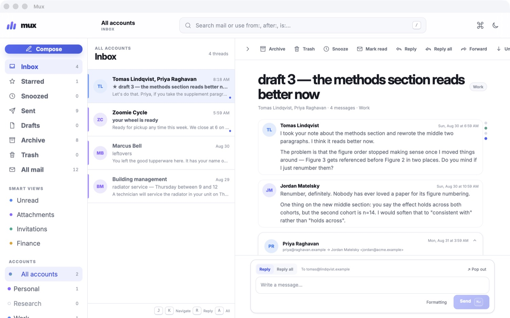
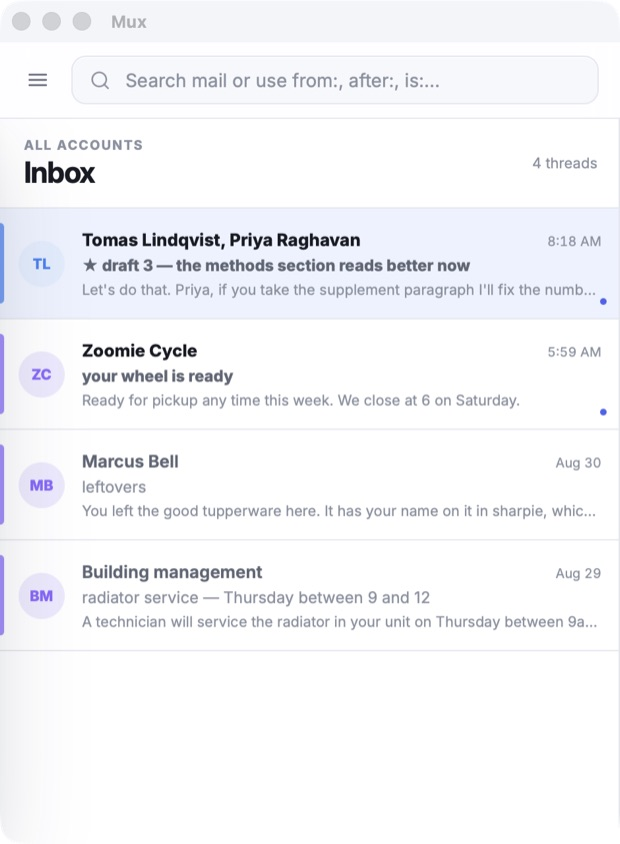
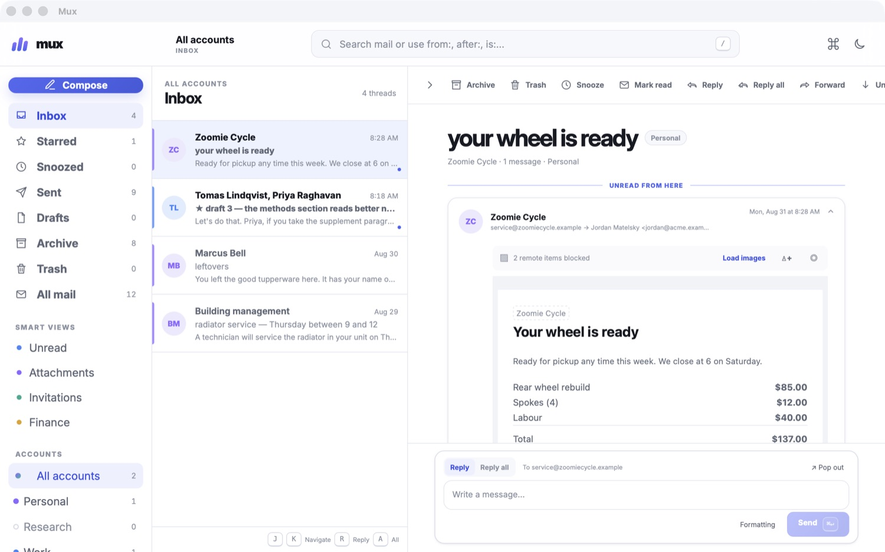

Mux is a free, open-source, not-hideous mail client. Its key features are (1) not bad, and (2) not ugly.
Ads. Tracking. Vendor lock-in. No offline access.
Archaic looks, atrocious UX. Did my best to love them but alas
Subscription fees to read your own email: literally lol, lmao even
Mux is the fourth option. FOSS, beautiful, no sucky subscription fees.
Reading, searching, and sorting never hit the network, so they can operate fast and offline. And you can queue messages for delivery when you reconnect.
Multi-account with a unified inbox, and per-account accent colors so you always know which account you are in.
If you want a model in your mail, you can BYO, and Mux will (optionally) cap its authority (i.e., read but no send). If you don't, there is no forced AI in Mux.
j/k to move, Enter to open, ⌘F to search,
⌘P for the palette. Et cetera, and so on. (All customizable)



Details
from:jordan AND (since:1y OR is:starred).